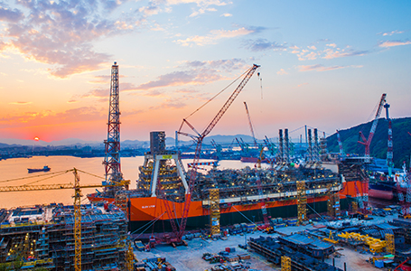

21C 국제산업물류 중심항만
- Home
- 투자 강점
- 투자환경
- 21C 국제산업물류 중심항만
21C 국제산업물류 중심항만
울산항은 한반도 동남쪽에 위치한 국내 최대 산업물류항이자, 세계 4위의 액체화물 처리항입니다.
배후에 국내 최대 산업단지 및 대규모 액체화물 저장시설이 있어 동북아 액체화물 중심항으로 위치를 확고히 하고 있을 뿐 아니라, 철강, 금속, 기계류, 목재 등 다양한 화물이 처리되고 있으며, 특히 국내 자동차의 34%, 선박의 33% 가 울산항을 통해 수출되고 있습니다.
현재 115선석의 접안능력과 71백만톤의 하역능력을 가지고 있으며, 지난해 연간 2억2백만톤의 항만물동량을 처리 하였습니다.
2020년 울산신항이 준공되면, 울산항은 132선석의 접안능력, 연간 8천9백만톤의 하역능력과 연간 2억5천3백만톤의 항만물동량 처리능력을 갖추게 되며, 울산신항은 유럽ARA, 미국 휴스턴, 아시아 싱가폴에 이어 세계 4대 오일허브로 구축될 것입니다.
-

- 
울산항
액체화물처리 전국 1위, 항만물동량 전국 3위, 선박 입항 전국 2위
(기준 : 2017년)
-
접안능력(동시)115선석
-
하역능력(연간)71,728천톤
-
항만물동량(연간)202,031천톤
세계 4대 오일허브로 구축
(기준 : 2020년, 울산신항 준공시)
-
접안능력132선석
-
하역능력88,817천RT / 년
-
항만물동량252,661천RT / 년